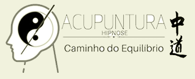

Acupuntura
Técnica milenar que estimula pontos específicos do corpo para promover equilíbrio e bem-estar.

Atendimento humanizado para auxiliar no alívio de dores, ansiedade, estresse, insônia e na busca por mais qualidade de vida.
Técnica milenar que estimula pontos específicos do corpo para promover equilíbrio e bem-estar.
Estímulo de pontos na orelha para auxiliar em dores, ansiedade, compulsões e equilíbrio emocional.
Recurso complementar para trabalhar hábitos, emoções, relaxamento e foco mental.
A proposta é acolher cada pessoa de forma individual, respeitando sua história, rotina e necessidades.
Entre em contato pelo WhatsApp e descubra qual abordagem pode ajudar no seu caso.
Chamar no WhatsApp Substitua o número no arquivo index.html pelo WhatsApp correto.